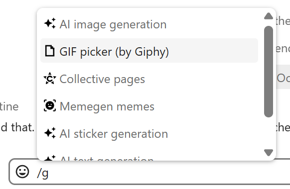
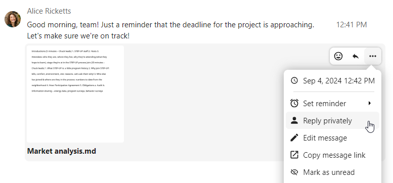
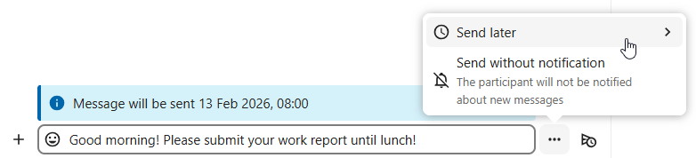
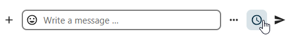

Sending messages
Using Markdown
You can enhance your messages using Markdown syntax. Supported elements:
Headings and dividers
# Heading 1
## Heading 2
### Heading 3
#### Heading 4
##### Heading 5
###### Heading 6
Heading
===
Normal text
***
Normal text
Inline decorations
**bold text** __bold text__
*italicized text* _italicized text_
`inline code` ``inline code``
```
.code-block {
display: pre;
}
```
Lists
1. Ordered list
2. Ordered list
* Unordered list
- Unordered list
+ Unordered list
Quotes
> blockquote
second line of blockquote
Task lists
- [ ] task to be done
- [x] completed task
Tables
Column A | Column B
-- | --
Data A | Data B
Inserting emoji
You can add emoji using the picker on the left of the text input field.

Smart Picker
The smart picker makes it easier to insert links, files, or other content into your conversations. Just choose the type of content you want to insert (files, Talk conversations, Deck cards, GIFs, etc.). You can also type / in the chat input to open the selector.
{kind=link}

Several integration apps can extend the Smart Picker with additional content types, such as GitHub and GitLab issues, Giphy GIFs, and more. Ask your administrator which integrations are available on your instance.
Replying to messages and more
You can reply to a message using the arrow that appears when you hover a message.

In the ... menu you can also choose to reply privately. This will open a one-to-one conversation.
{kind=link}

Here you can also create a direct link to the message or mark it unread so you will scroll back there next time you enter the chat. When it is a file, you can view the file in Files.
Silent messages
If you don't want to disturb anyone in the middle of the night, there is a silent mode for chatting. While it is enabled, other participants will not receive notifications from your messages.

Scheduling messages
If you want to send a message not right now, but at a specific time, you can schedule it. Just select the desired date and time in the quick actions next to the input field.
{kind=link}

You can find all your scheduled messages by clicking on the clock icon next to the input field. There you can edit, reschedule or delete currently prepared messages.
{kind=link}

Chat summary
When AI assistant is enabled, a summary can be generated for a conversation if there are more than 100 unread messages. You can generate it by pressing the button that is visible in chat above the first unread messages.